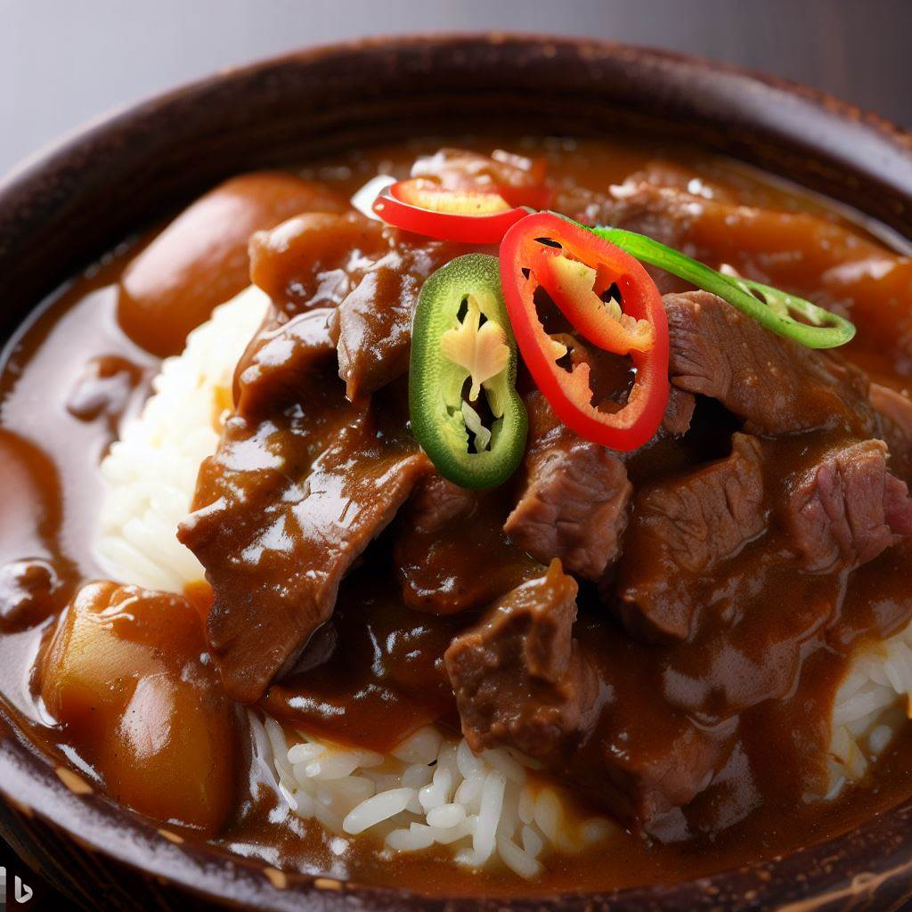

Braised Beef Curry with Fragrant Spices

In this Indian-inspired dish, chunks of beef cook in their own juices, seasoned with spices.
Using whole spices such as cloves and coriander seeds and cinnamon sticks, rather than ground versions,
improves the result since they release their flavor slowly as the curry cooks.
Serve with lots of fluffy white rice and Indian bread such as naan to soak up the delicious sauce.
Ingredients
- 1 Tbsp. Vegetable oil
- 2 lbs. Stewing beef, trimmed, cut into 1-inch cubes
- 2 Onions, finely chopped
- 4 cloves garlic, minced
- 1 Tbsp. Fresh ginger, minced
- 1 Tbsp. Coriander seeds
- 1 tsp. Turmeric
- 1 Cinnamon stick (approximately 2 inches long)
- 4 Cloves
- 1 tsp. Salt
- 1 tsp. Pepper
- 1/2 tsp. Fennel seeds
- 1/4 cup Beef stock
- 2 Long red or green chiles, finely chopped (see notes)
Method
- In a skillet, heat oil over medium-high heat for 30 seconds. Add beef, in batches, and cook, stirring, adding a bit more oil if necessary Until nicely browned, about 4 minutes per batch. Using a slotted spoon, transfer to slow cooker
- Reduce heat to medium. Add onions to pan and cook, stirring until softened, about 3 minutes. Add garlic, ginger, coriander, turmeric, cinnamon, cloves, salt, pepper, fennel seeds Cook until fragrant, about 1 minute. Add stock and bring to a boil.
- Pour mixture over beef cook on low for 8 to 10 hours or high for 4 to 5. When beef is tender stir in chiles then cover and cook on high for 10 minutes. Serve immediately.
Notes
- Chile nomenclature can be confusing. Long red or green chiles are usually used in Indian cooking and can be found in asian markets. They are sometimes called cayenne or serrano chiles not to be confused with Mexican serrano chiles, which are different.
- This dish can be partially prepared before it is cooked. Start with step 2 then cover and refrigerate for up to 2 days. When you are ready to cook complete steps 1 and 3.